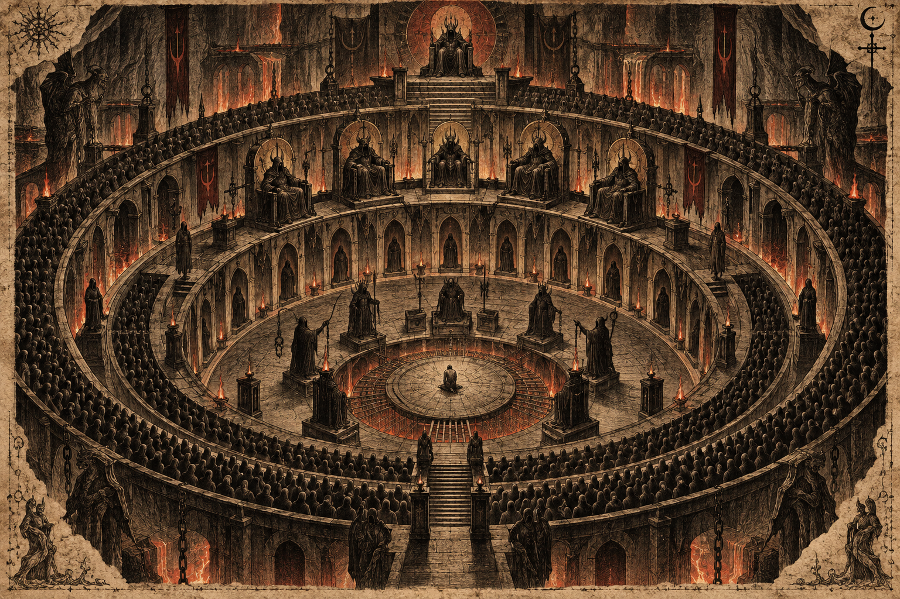

The Tribunal is a circular court built so that no voice can hide behind another. The damned stand alone at its center while every accusation, memory, consequence, and contradiction is heard from all sides. Its six judges are never the same twice; the court changes its faces so precedent can never become prejudice.

The judges hear, the persecutors expose, the witnesses remember, and the jurors weigh the harm. Only the Sentencer speaks the final burden. Hell does not decide who is evil; it determines what truth requires of those already delivered to its court.